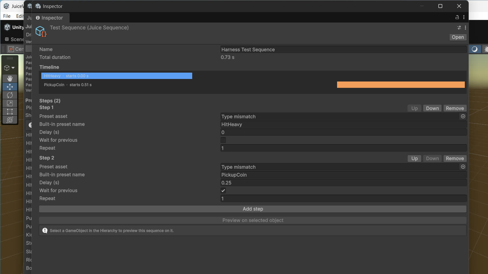

Sequencer
A sequence chains presets into one timed asset: a reward chain, a death routine, an entrance with punctuation.

JuiceSequence
A JuiceSequence is a ScriptableObject holding a list of steps. Each step (JuiceStep) carries:
- A preset — either a preset asset or a catalog preset name. Steps resolve presets by name; an unresolvable step resolves to nothing rather than throwing.
- Delay — seconds before this step starts, relative to the timeline.
- WaitForPrevious — when set, the step starts after the previous step's preset finishes (plus its delay) instead of on the shared timeline.
- Repeat — how many times the step plays.
TotalDuration is the end of the last step on the timeline, computed with the same scheduling math the runtime uses, so the number the inspector shows is the number playback follows.
The visual timeline
The sequence asset's inspector draws a visual timeline: one lane per step, with bars positioned and sized in real seconds. You read a chain's shape — overlaps, gaps, the long tail of a slow-mo — without playing it. The timeline lives in the asset's inspector, where your eyes already are when you author it; there is no separate sequencer window.
JuiceSequencer
The component that plays a sequence:
Play()andPlay(JuiceSequence)— start playback.Stop()— stops scheduling. Steps already playing are left to finish.IsPlaying— live state.OnSequenceFinished— raised when the sequence completes.
Sequences tick on unscaled time, so a chain that opens with hit-stop still lands its later steps on schedule. A sequencer can also be fired from a JuiceTrigger (Triggers), which is the zero-code route for chained effects on collisions and pickups. Sequences can be previewed on a selected object in the Editor — see Editor Preview & Inspectors.
A worked shape: the sample's reward chain
The Juice Arcade HUD fires a three-step reward chain through a sequencer when its reward button is pressed. That chain is the pattern to copy: an immediate celebration preset, a delayed second beat that waits for the first, and a closing flourish — authored once as an asset, then played from one component call.